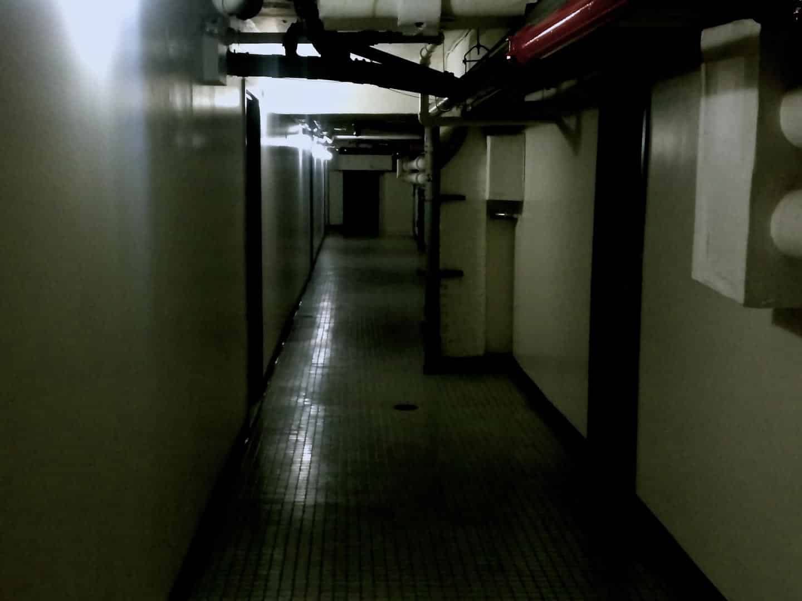
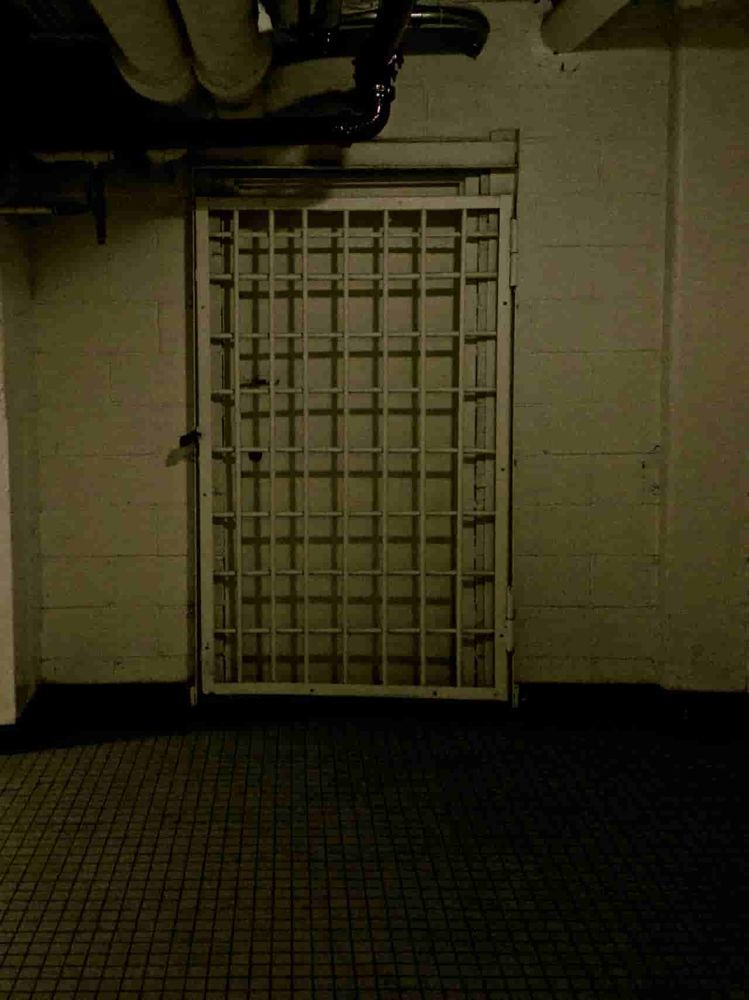

hey, where the hell are you? the openers are about to go on
ahh shit sorry. can't make it tonight. enjoy the show!!!
hilarious. hurry up.
I'm serious. I found something I gotta check out before someone else does.
are you kidding me. Do you know how much these tix cost?
I'm good for it!
like you were gonna pay me anyway. what's so urgent?
you KNOW I'd never want to bail on you
but I read about this place on an urbex board, and i'm gonna be the first in
wanna come give me a hand?
😃
... of course not
JEN!!! how is this not better than a concert? This city is 400 years old, there are all kinds of forgotten places
secrets that NO ONE knows
didn't your hair get caught in a grate last time?
yes it did
and it was fine, and now i have a fun story
you have no fun stories
😒
where is this going down?
58 Joralemon, near the river.
it's a building? don't you urban explorer morons usually sneak into bridges and tunnels?
that's the cool part, it WAS a building but the MTA turned it into part of the subway system
one sec
check this out on Wikipedia
ooook. what the hell does a subway ventilator do?
ventilates the subway?
brilliant
this seems like a terrible idea.
most good ideas do at the beginning. come meet me!
i have concert tix and a clean criminal record. no thx.
fine, but keep your phone handy
why?
in case you need to come bail me out of jail
duh
1 hour later...
holy shit Jen. this is amazing, you need to come meet me
JEN STOP DANCING AND PAY ATTENTION
oh yeah? find buried treasure?
for an urban explorer, yeah. it's way bigger than anyone thought. corridors for miles.

these go on forever.
so you're underground?
yeah, but not too far because i have reception in some places? This whole place is weird.
the lights won't stay on for longer than a few seconds at a time
and I could swear I heard someone earlier
you shouldn't be down there by yourself, marie
i'm not 100% sure i am
it's so quiet down here
and then i'll hear something, but it might just be me thinking
you're freaking me out
lol well then you're gonna HATE this

NOPE
don't be such a wimp
it's probably just storage or something
why are you still even there???
you have your proof already
do you get extra danger points the longer you stay???
well
the thing about all of these hallways
i'm maybe a tiny bit lost?
!!!!
i'm hailing a cab right now. if you haven't found your way out by the time i get there, i'm calling someone
oh come on
i'm fucking serious marie.
i told you this was a bad idea and now you're lost
i love you but I'm tired of bailing you out
ok ok, i'll find the exit
i almost have everything i need
good. when you do, i'll be there, and we can take the cab back and maybe make the encore.
you're right
that sounds really good.
i'm really sorry i ditched you jen.
i'll find my way out
good
i just need to grab a souvenir first
there's something behind this door, i can feel it
About half an hour later...
marie 2, doors 0
i'm in
get your "souvenir" and come outside, i'm on my way
Shit!
what???
it looks like someone is living here. Cots and some food trash.
this means i'm not the first one here. Someone else must have gotten in before me. maybe squatters?
About 15 minutes later...
In the cab, getting close.
there's another room
just leave it!
oh my god
what
please hurry
what is it
???
oh god jen
someone's down here with me
I can hear them
they can't find me here
there were cots in the other room too
with handcuffs on them
it's like a fucking dungeon
phone dying
are you close?
I'm coming down jorlaemon
why aren't you picking up?
i'm inside, pick up your phone!!!
oh i hear you
I'm sorry, Jen
what are you talking about?
I can fix it
what is this?
where are you who? who are those people?
MARIE WHAT'S GOING ON
They made a deal with me
They said they'd let me go
if I brought you to them
I promise I'll fix it
is this some kind of joke
tell me this is a sick fucking joke
it's ok Jen i have a plan
it's gonna be ok
they're coming marie
please
i'm so sorry
...
NYPD Preliminary Incident Report #619-346-62-BK
Marie Novak (24/f/w) of Queens reported a "torture chamber" underneath MTA facility at 58 Joralemon Street in Brooklyn (see attached 9-1-1 transcript).
Caller reported that her friend Jennifer Lao (22/f/a) of Manhattan was being held captive and had managed to send her a text message. Officers and paramedics were dispatched at 0005.
First responders did not locate anyone, including Ms Lao, in the service tunnels beneath 58 Joralemon. No evidence of habitation as described by Ms Novak was present.
There was evidence of forced entry, and preliminary investigation suggests that tools found in Ms Novak's possession (including lock picks, bolt cutters, and a bump key) were used by Ms Novak to gain illegal entry to the MTA facility. A more detailed forensic report is pending.
A single envelope (EVID-ID #45564) adressed to "Marie" was found in one of the rooms that Ms Novak broke in to.
Inside was a handwritten note which said:
"This city is full of people like you."
The whereabouts of Ms Lao remain unknown. NYPD Homicide has opened an investigation.
Marie Novak is our prime suspect.
She is currently being held on suicide watch.